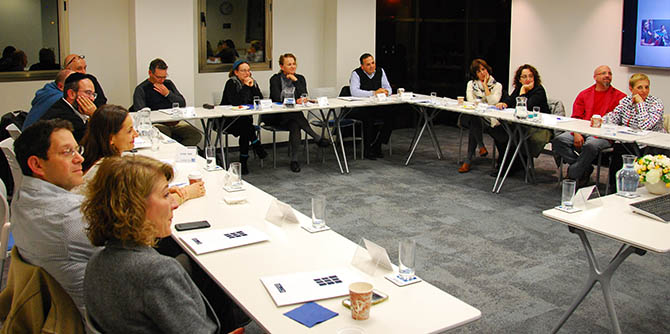

On Tuesday, January 10, 2017, the Mandel Graduate Unit held a meeting for Cohort 22 of the Mandel School for Educational Leadership, as part of its continuation programs.
The meeting opened with a round of updates that answered the question “Where am I in the world?” Prior to the session, each graduate submitted one personal picture and one professional picture. While the discussion touched on personal updates, it focused mainly on the graduates’ professional roles and the challenges they face in their work. Some of the graduates, who had recently started new jobs, shared the experiences of their new beginnings with the group.
The second part of the meeting was devoted to shared learning. Entitled “Networked Management and Complexity,” it focused on contemporary management challenges. Avner Hacohen, a clinical psychologist and organizational consultant who serves as a consultant for the Mandel Graduate Unit, led a fascinating discussion that combined a review of new theoretical paradigms with the personal experiences of the graduates in their professional settings.
The Mandel Graduate Unit’s continuation programs are based on the premise that the cohort as a whole is an important resource for its members, and that graduates who work in a diverse range of fields can benefit from each other’s professional knowledge. The programs are designed to create a safe and intimate space for examining professional dilemmas, studying the latest developments in education and society, and creating a community of learners within the graduate community.
The sessions provide graduates with opportunities to discuss personal and professional issues and challenges, as well as the organizational environments in which they operate. The program model, which has been developed by the Mandel Graduate Unit over several years, is tailored to the needs and developmental stages of each cohort.

{kind=link}